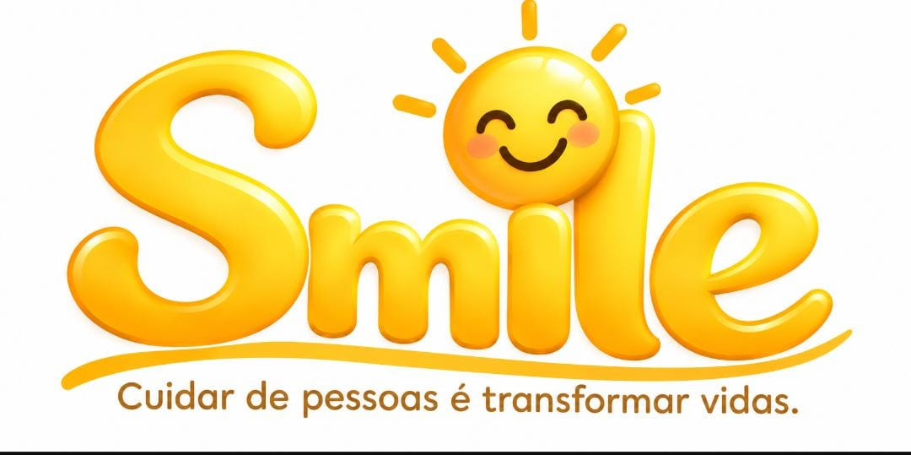

Saúde
Contamos com médicos, psicólogos, entre outros profissionais, para realizar avaliações, triagens e identificar necessidades de atendimento.

Cuidar de pessoas é transformar vidas.
Somos uma organização sem fins lucrativos dedicada a levar saúde, carinho e solidariedade para crianças e idosos em situação de vulnerabilidade.
Toda semana, reunimos voluntários para realizar ações sociais em asilos e orfanatos que precisam de apoio.
Quero ajudarA Smile nasceu com o propósito de aproximar profissionais, voluntários, doadores e instituições sociais.
Realizamos visitas semanais a asilos, orfanatos e outras instituições, oferecendo atendimento, atividades, doações e momentos de acolhimento.
Contamos com médicos, psicólogos, entre outros profissionais, para realizar avaliações, triagens e identificar necessidades de atendimento.
Dentistas voluntários participam das ações oferecendo avaliações e cuidados relacionados à saúde bucal.
Cozinheiros e voluntários ajudam na preparação de refeições e atividades relacionadas à alimentação e ao bem-estar.
Arrecadamos roupas, brinquedos, alimentos e outros itens necessários para crianças, idosos e instituições.
Recebemos doações financeiras destinadas à compra de medicamentos e outros itens necessários, de acordo com as necessidades identificadas.
Além dos cuidados materiais e de saúde, buscamos oferecer atenção, conversa, leitura, atividades e momentos de carinho para as pessoas atendidas.
Existem várias maneiras de fazer parte dessa rede de solidariedade.
Sua instituição precisa de apoio? Ou conhece alguma instituição que precise? Entre em contato conosco para conversarmos sobre uma possível ação social.
Nosso objetivo é conhecer as necessidades de cada local para organizar ações que contribuam para as pessoas atendidas.
E-mail:smile@rededocuidado.org